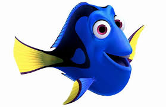

<!-- From the first iteration, built in Chpt 3 -->
<!-- Update: Added these fish back to FishDataProvider -->
<article class="fishList">
    <section class="fish">
        <div>
        <div class="fish__name">Nemo</div>
        <div class="fish__species">Clownfish</div>
        <div class="fish__length">3"</div>
        <div class="fish__location">Unknown; he's lost.</div>
        <div class="fish__diet">Algea</div>
    </section>
    <section class="fish">
        <div "></div>
        <div class="fish__name">Dory</div>
        <div class="fish__species">Royal Blue Tang</div>
        <div class="fish__length">12"</div>
        <div class="fish__location">Australia</div>
        <div class="fish__diet">Algea</div>
    </section>
    <section class="fish">
        <div ></div>
        <div class="fish__name">Marlin</div>
        <div class="fish__species">Clownfish</div>
        <div class="fish__length">5"</div>
        <div class="fish__location">Australia</div>
        <div class="fish__diet">Algea</div>
    </section>
</article>

<!-- From the first iteration, built in Chpt 3 -->

<section class="tip">
    <div class="tip__text">
        <h3>Properly cycle the tank</h3>
            <p>While you might think you’re going to be able to fill a lovely glass bowl with water out of the tap and plop your new fish right into it, it’s definitely not recommended. Fill your tank with gravel, add your filter, then add water. Allow time for beneficial bacteria to populate the gravel and the filter. Use a tank starter if time does not permit. Then set your tank to maintain the proper temperature and pH for the species of fish kept and add appropriate lighting.</p>
        <div class="source"><a href="https://www.sheknows.com/living/articles/1131322/how-to-take-care-of-pet-fish/">*Source</a>
        </div>
    </div>
</section>
<section class="tip">
    <div class="tip__text">
        <h3>Acclimate</h3>
        <p>Make sure your fish are conditioned to the water you’ll be using and the water temperature before adding them to the tank. This can be done by floating them in bags or gradually adding tank water to the bag. It should only take about 15 minutes to an hour to do this.</p>
        <div class="source"><a href="https://www.sheknows.com/living/articles/1131322/how-to-take-care-of-pet-fish/">*Source</a></div>
    </div>
</section>
<section class="tip">
    <div class="tip__text">
        <h3>Ensure plenty of elbow room</h3>
        <p>Don’t over crowd your finned family members! Make sure there is no more than (roughly) 1 inch of fish per gallon of tank size. The best bet is to purchase the biggest tank your budget and your space allows. That way, you’ll have room to grow your collection if you decide that fish keeping is your thing (which it totally will be, for sure).</p>
        <div class="source"><a href="https://www.sheknows.com/living/articles/1131322/how-to-take-care-of-pet-fish/">*Source</a></div>
    </div>
</section>
